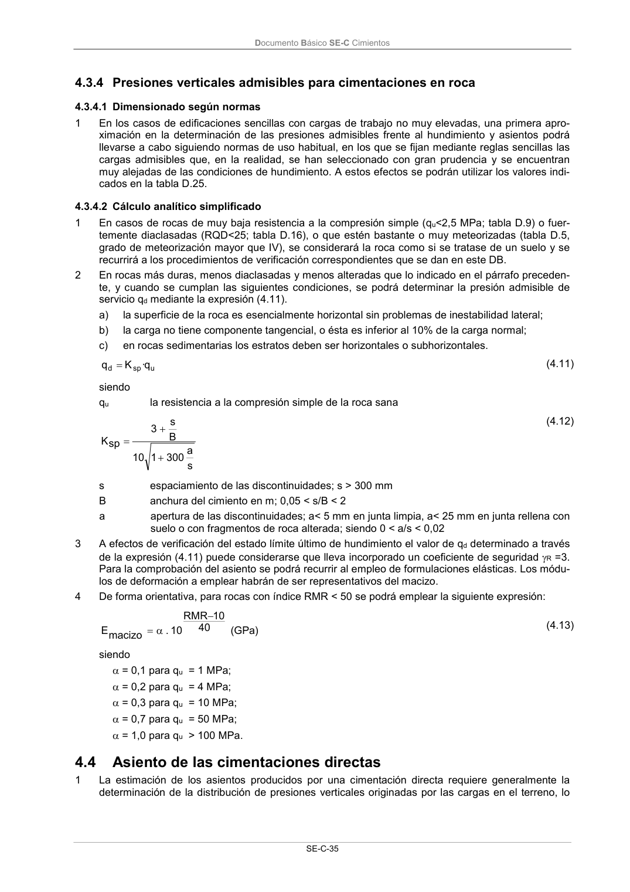

DB-SE-C Cimientos · edición 2019-12-20 · capa oficial
Documento DB-SE-C-oficial · SHA-256 del PDF a71133f4b0dca253e45ea3071c70f2a512354bcc5cd841bf89b1a502f567ac5e
Copia fiel del PDF fuente · Fuente oficial
Ficha de la disposición en la fuente oficial
Formatos: JSON del segmento · Markdown
4.3.4.2 Cálculo analítico simplificado 1 En casos de rocas de muy baja resistencia a la compresión simple (qu<2,5 MPa; tabla D.9) o fuer- temente diaclasadas (RQD<25; tabla D.16), o que estén bastante o muy meteorizadas (tabla D.5, grado de meteorización mayor que IV), se considerará la roca como si se tratase de un suelo y se recurrirá a los procedimientos de verificación correspondientes que se dan en este DB. 2 En rocas más duras, menos diaclasadas y menos alteradas que lo indicado en el párrafo preceden- te, y cuando se cumplan las siguientes condiciones, se podrá determinar la presión admisible de servicio qd mediante la expresión (4.11). a) la superficie de la roca es esencialmente horizontal sin problemas de inestabilidad lateral; b) la carga no tiene componente tangencial, o ésta es inferior al 10% de la carga normal; c) en rocas sedimentarias los estratos deben ser horizontales o subhorizontales. u sp d q· K q (4.11) siendo qu la resistencia a la compresión simple de la roca sana s a 300 1 10 B s 3 sp K (4.12) s espaciamiento de las discontinuidades; s > 300 mm B anchura del cimiento en m; 0,05 < s/B < 2 a apertura de las discontinuidades; a< 5 mm en junta limpia, a< 25 mm en junta rellena con suelo o con fragmentos de roca alterada; siendo 0 < a/s < 0,02 3 A efectos de verificación del estado límite último de hundimiento el valor de qd determinado a través de la expresión (4.11) puede considerarse que lleva incorporado un coeficiente de seguridad R =3. Para la comprobación del asiento se podrá recurrir al empleo de formulaciones elásticas. Los módu- los de deformación a emplear habrán de ser representativos del macizo. 4 De forma orientativa, para rocas con índice RMR < 50 se podrá emplear la siguiente expresión: 40 10 RMR 10 . macizo E (GPa) (4.13) siendo = 0,1 para qu = 1 MPa; = 0,2 para qu = 4 MPa; = 0,3 para qu = 10 MPa; = 0,7 para qu = 50 MPa; = 1,0 para qu > 100 MPa. 4.4
